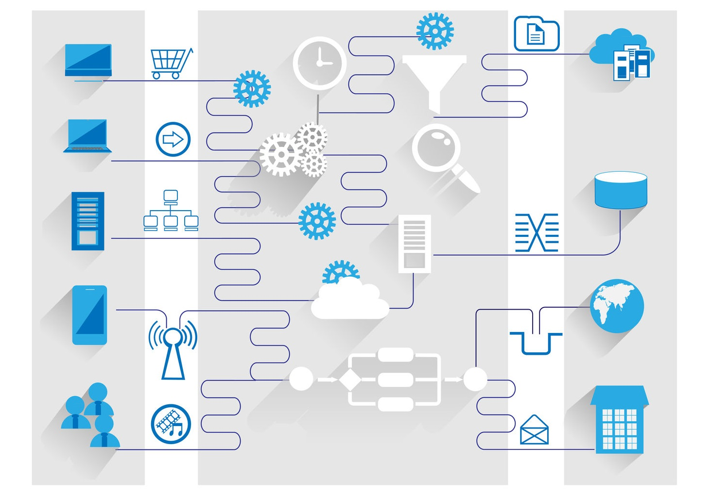

Connect Anything
If you are a tech savvy business, chances are you are using dozens of software tools to make your business work. Do you ever wish that you could make these tools talk to each other? That's exactly what a custom integration from JNC Tech can do for you. We use existing tools and in-house know-how to help businesses connect all of their favorite tools into one comprehensive solution.
A custom integration can:
- Connect your website to your CRM
- Synchronize multiple calendars into a central shared calendar
- Create text message or email alerts when important things happen at your business
- Synchronize pricing data across all of your e-commerce platforms
- Automatically publish data from Excel, Access or Word to your website
- Connect ANY two or more tools you use at your business to streamline your operations
Custom integrations can take your business to the next level. Let JNC Tech help implement the tools from your creative mind.